寶貝學習樂園｜美術風格提案
同一組題材用三種畫風繪製（gemini-2.5-flash-image）。吉祥物小熊只是佔位，角色設定另外決定。
黏土 3D
軟Q立體、像捏出來的玩具；小朋友接受度最高，但和童樂簿同路線
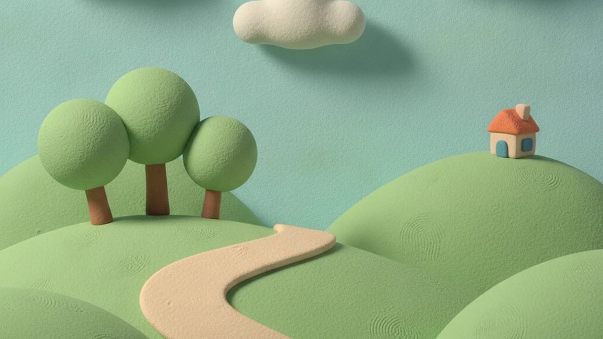
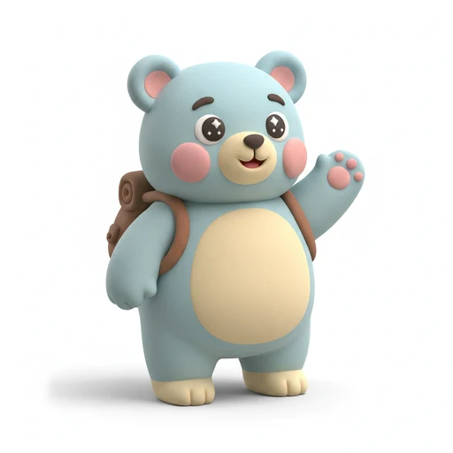
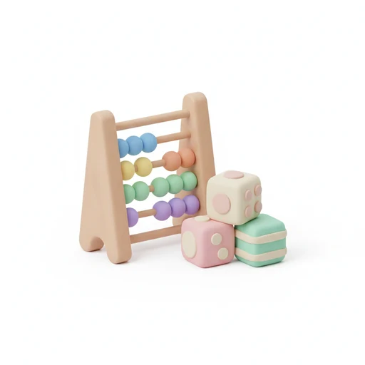
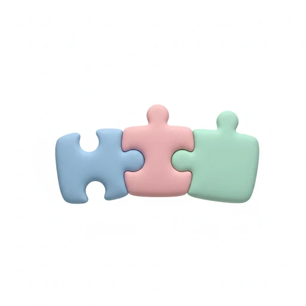
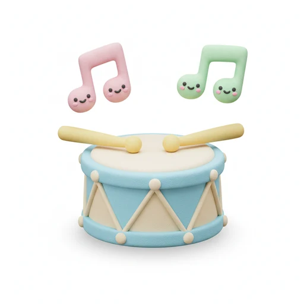
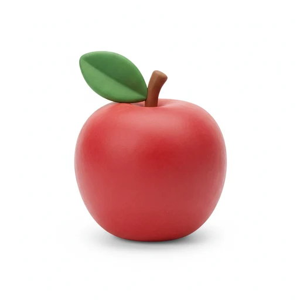
繪本水彩
溫暖手繪、像床邊故事書；有教育感、市面上少見，容易做出區隔
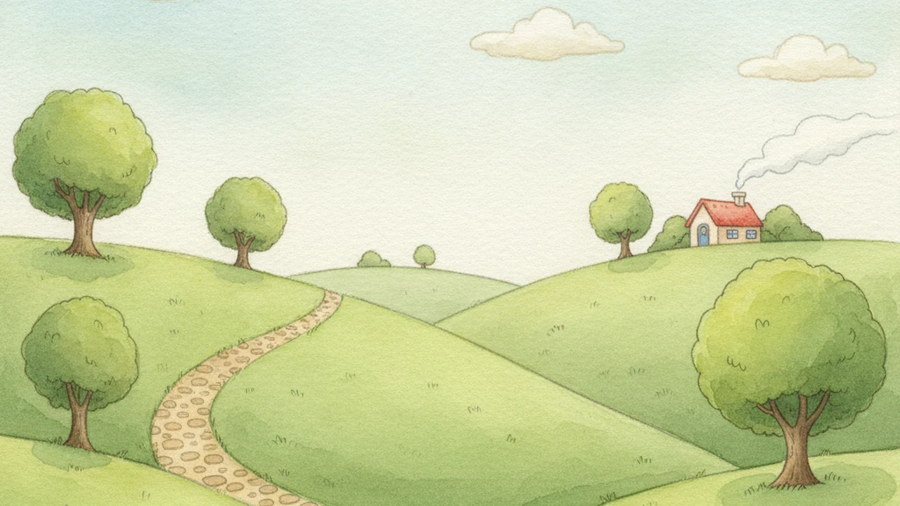
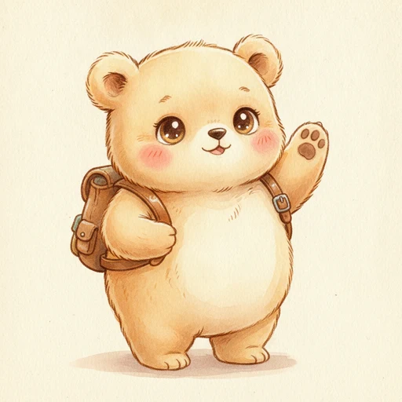
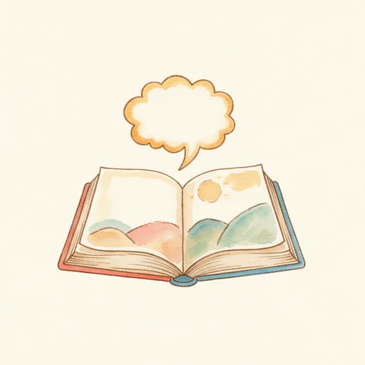
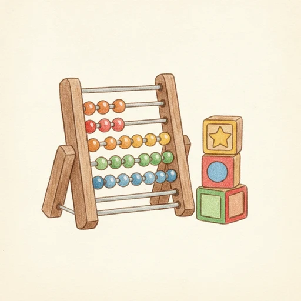
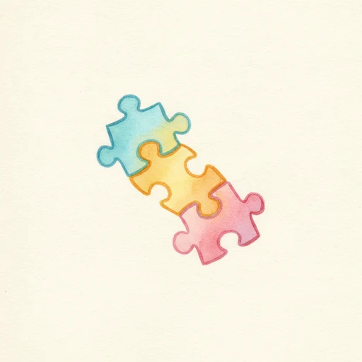
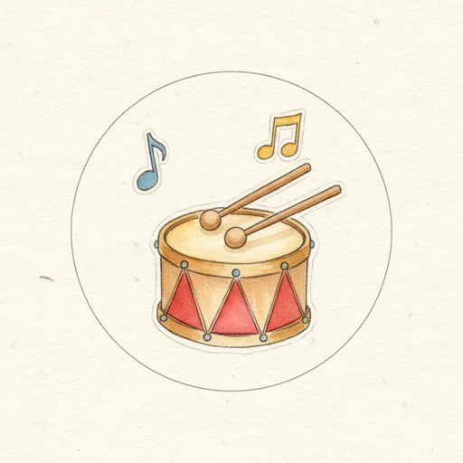
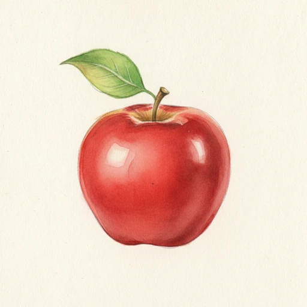
扁平貼紙
乾淨向量、粗白邊貼紙；最好維持一致、縮小也清楚，最接近現有 App 的感覺
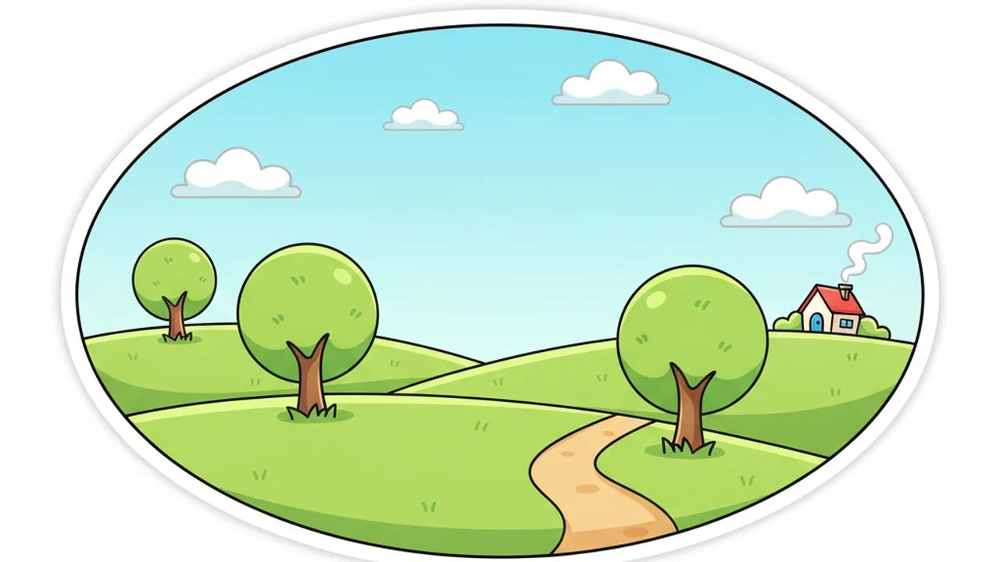
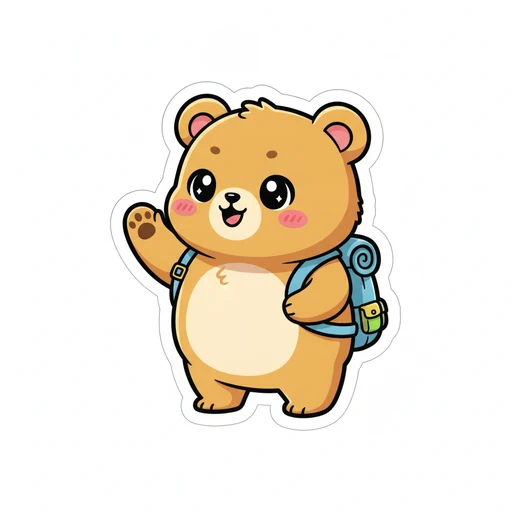
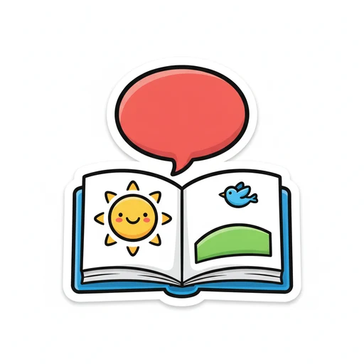
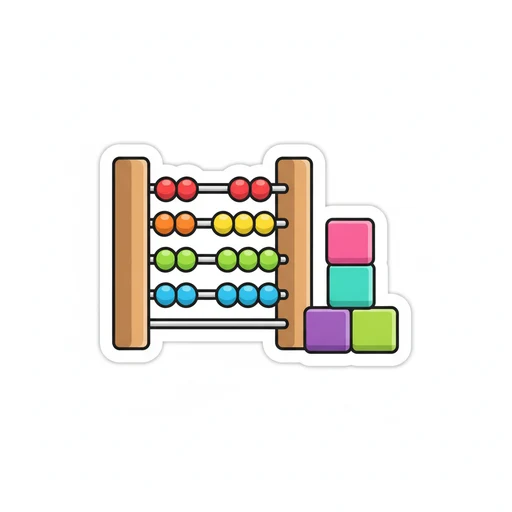
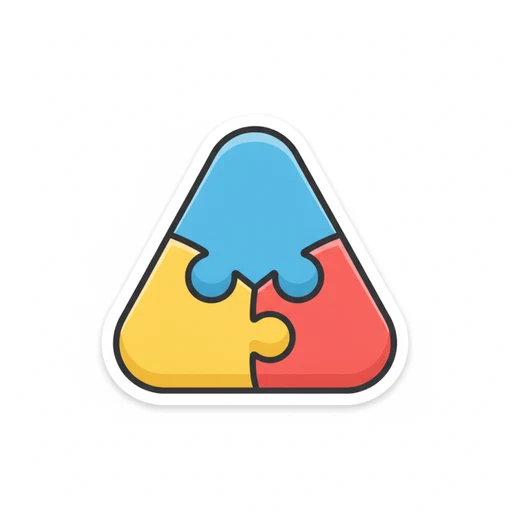
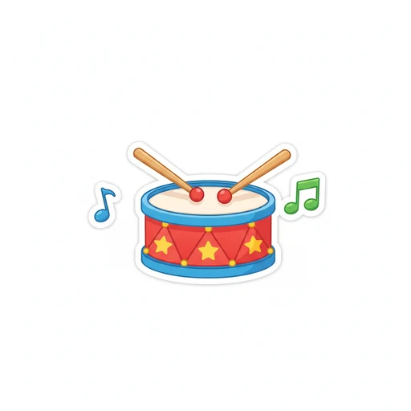
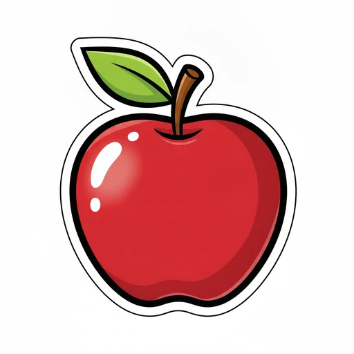